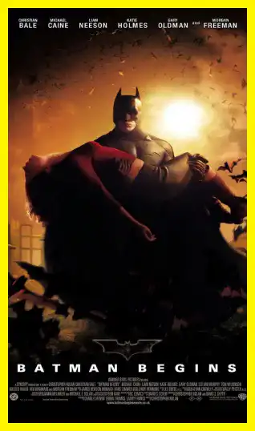

L'envers du décor
Beaucoup pensent que Batman est
un super-héros invincible. D’où sa
popularité auprès de la génération
Y. Sur Netflix, le film “The Dark
Knight Rises” est recommandé à
98%. Malgré ça, il peut baisser dans
l’estime de la population française.
C’est le super-héros qui à
l’empreinte carbone la plus élevée.

Légende : Batman de dos @denofgeek
Le film “The Dark Knight Rises” séduit
98% de personnes sur Netflix. C’est la
meilleure recommandation parmi tous les
DC Comics ou Marvel. Malgré sa sortie sur
grand-écran en 2012. À cette période, il y a
4,5 millions d’entrées au box-office en
France.
Il est réalisé par Christopher Nolan, qui a
réalisé de nombreux films comme :
Légende : Insomnia en
2002 @allocine

Légende : Batman Begins
en 2005 @allocine
Légende : The Dark Knight
en 2008 @allocine
Légende : Inception en
2010 @allocine
Légende : Interstellar en
2014 @allocine
Légende : Quay en 2015
@allocine
Voici la liste complète de film fait par le
réalisateur Américain.
Mais les problèmes environnementaux,
ne préoccupent pas autant qu’aujourd’hui.
Certes Batman vend du rêve avec :
-sa bat-mobile
-ses équipements high-tech
-son charisme
-ou encore sa voix.
En plus de ça, il est milliardaire. Le seul
bémol en tant que super-héros, il n’a pas de
super-pouvoir.
Bruce Wayne c’est le vrai nom de l’homme
masqué.
Il est appelé Batman quand il protège les
habitants de Gotham city. Le tout est une
fiction, car Gotham n’existe pas réellement.
Le film est tourné dans la ville de Pittsburgh
aux USA. Son identité est précieusement
gardée secrète. Dans le but de se protéger de
ses nombreux ennemis. Comme par
exemple, le Joker ou Bane(le terroriste
masqué).
Il a la réputation de sauver des vies seul. Il
est pourtant accompagné par :
-Alfred Pennyworth (son major
d’homme)
-James Gordon (le commissaire)
-bien sûr Robin.
"Ces personnes l’adulent, sans
savoir à quel point il, peut
nuire à son environnement."
Batman,
un anti-héros ?
Son empreinte carbone est la plus élevée
de tous les super-héros. Elle équivaut à
celle de 2,6 millions d’habitants.
Incroyable n'est-ce pas ?
On peut s’interroger sur sa qualité de
héros. Il sauve directement des vies, mais
contribue énormément au réchauffement
climatique. Nous sommes tous conscient
que notre avenir est menacé. S’il reste des
sceptiques... Les scientifiques annoncent :
“la température mondiale peut
augmenter de 3° avant 2100”.
C’est une catastrophe à laquelle Batman
n’a pas pensé. Surtout quand il achète de
plus en plus d’équipements. Des
équipements qui ne sont pas à leur temps
de vie le plus optimal.
Auteur : Martin Crevoisier